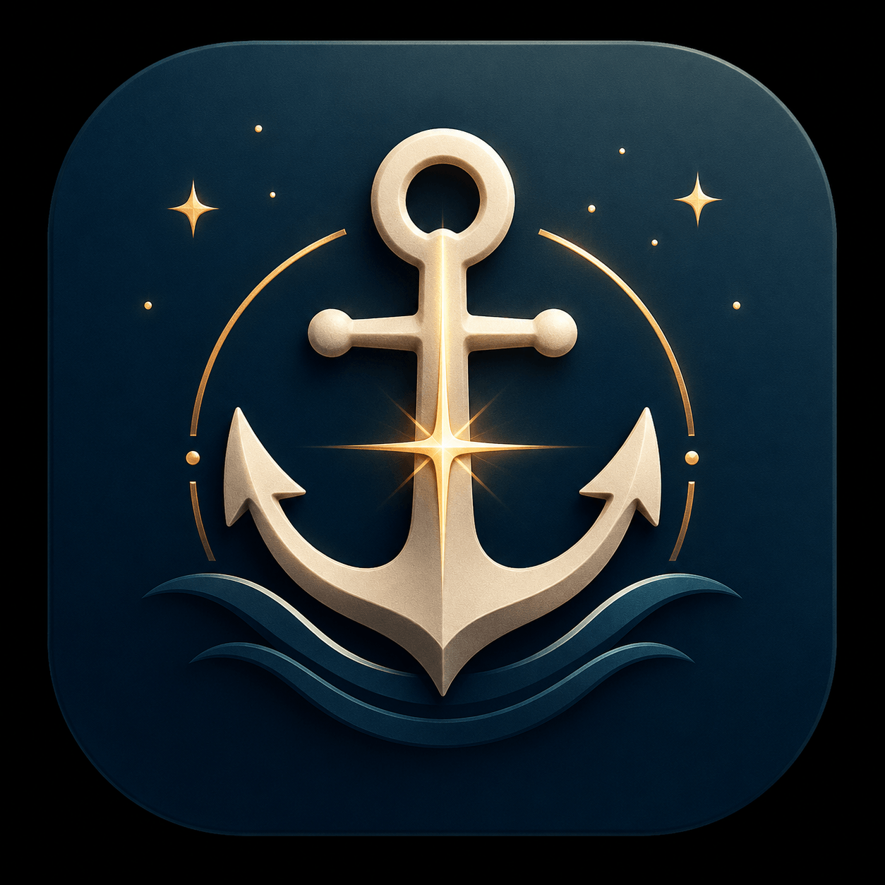

Elora Radiance Co. · Free
Scripture for Every Emotion
A word for every weight your heart carries. Pick what you're feeling — Scripture meets you there.
“Do not be anxious about anything, but in everything by prayer and supplication with thanksgiving let your requests be made known to God.”
Anxiety lives in tomorrow. Scripture keeps pulling you back to today, where God actually is.
What's Inside
Not a generic devotional. Start at the center with the core of what you're feeling, then narrow to the word that's actually true, and Scripture meets you there. Each feeling opens to multiple verses with a brief reflection that meets you where you are. Prefer a simple list? It's one tap away.
How It Works
Designed for the moments you actually need it — not after twenty taps and a sign-up flow. Open it. Pick a feeling. Read the verse. Carry it with you.
"I waited patiently for the Lord; he inclined to me and heard my cry. He drew me up from the pit of destruction, out of the miry bog, and set my feet upon a rock, making my steps secure."
Psalm 40:1–2 · ESV — This is what Anchored Verse is for.
Open It Now
Whatever you're feeling right now — anxiety, gratitude, grief, hope — there's a verse for that. Pick it. Read it. Anchor.
⚓ Open Anchored Verse — FreeQuestions
Elora Radiance Co.
Scripture-based tools for every dimension of the Christian life.
Join the Community
New app releases, Scripture resources, and faith tools — sent straight to your inbox. No noise, just what helps you stand firm.
We'll never share your email. Unsubscribe anytime.